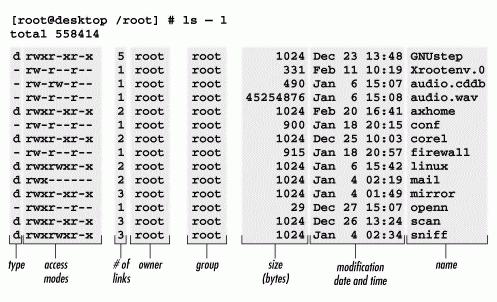

Linux Command
Table of Contents
1 系统信息
lsb_release |
查看 Linux 发行版信息 |
|---|---|
uname |
查看系统信息 |
1.1 lsb_release
lsb_release <options>
-a, --all
1.2 uname
uname <options>
-a, --all
-i, --hardware-platform
-m, --machine
-o, --operating-system
-p, --processor
-r, --kernel-release
-s, --kernel-name
-v, --kernel-version
2 系统状态
free |
查看剩余内存 |
|---|---|
nmon |
交互式性能监视 |
nmonchart |
将 nmon 输出结果图形化 |
top |
系统运行时间、系统负载、CPU 使用率、进程列表 |
htop |
增强型 top |
uptime |
系统运行时间、平均负荷 |
vmstat |
CPU 使用率、内存、虚拟内存交换、磁盘 I/O 等 |
2.1 free
free <options>
-h, --human
2.2 nmon
nmon <options>
c |
cpu | |
|---|---|---|
d |
disk | |
k |
kernel | 内核状态、系统负载 |
n |
network |
2.2.1 k
RunQueue ContextSwitch # 每秒上下文切换次数 Forks Interrupts Load Average 1 mins 5 mins 15 mins CPU use since boot time Uptime Days = Hours = Mins = Idle Days = Hours = Mins = Average CPU use =
2.3 nmonchart
nmonchart <nmon> <html>
2.4 top
top
top - _ up _ min, _ user, load average: _, _, _ # 系统运行时间、用户数、系统负载（1、5、15 分钟） Tasks: _ total, _ running, _ sleeping, _ stopped, _ zombie %Cpu(s): _ us, _ sy, _ ni, _ id, _ wa, _ hi, _ si, _ st # CPU 时间百分比 | +----------------------- # IOWait KiB Mem : _ total, _ free, _ used, _ buff/cache KiB Swap: _ total, _ free, _ used. _ avail Mem PID USER PR NI VIRT RES SHR S %CPU %MEM TIME+ COMMAND # 进程列表 | | | | | | | | | | | | | +------------ # 总运行时间 | | | | | +------------------------ # 状态，S = Sleep，R = Running，Z = Zombie | | | | +---------------------------- # 共享内存 | | | +-------------------------------- # 占用物理内存 | | +------------------------------------- # 占用虚拟内存 | +---------------------------------------- # Nice 值 +------------------------------------------- # 优先级
Shift + F 选择排序方式。
2.4.1 CPU 时间百分比
us |
user | 用户空间消耗 |
|---|---|---|
sy |
system | 内核空间消耗 |
ni |
nice | nice 进程（低优先级）消耗 |
id |
idle | 闲置 |
wa |
wait | 等待外部 I/O |
hi |
hardware interrupt | 响应硬件中断请求 |
si |
software interrupt | 响应软件中断请求 |
st |
stole time | 分配给当前虚拟机但被同一台物 |
| 理机上的其他虚拟机偷走的时间 |
2.5 uptime
$ uptime 15:42:30 up 2 days, 7:50, 4 users, load average: 0.73, 0.67, 0.68 # 三个数字分别为 1 分钟、5 分钟、15 分钟内系统的平均负荷
2.6 vmstat
vmstat <options>
3 系统控制
halt |
终止所有进程并关闭 CPU |
|---|---|
poweroff |
在 halt 基础上关闭电源 |
shutdown |
在 poweroff 基础上运行关机脚本 |
3.1 poweroff
通过向主板和 PSU（Power Supply Unit）发送 ACPI（Advanced Configuration and Power Interface）命令关闭电源。
3.2 shutdown
shutdown <options> <time> <message> # <options> -c # 取消 pending 的关机命令 -H, --halt -p, --poweroff -r, --reboot # 关闭后重启 # <time> <hh>:<mm> # 指定时间 +<m> # 几分钟后 now # 立即
4 进程
ps |
|
|---|---|
htop |
|
kill |
向进程发送信号 |
jobs |
查看 Shell 当前正在处理的作业 |
nohup |
阻断 SIGHUP 信号，使会话退出时，后台进程不退出 |
bg fg |
重启停止的作业 |
nice |
以指定的优先级执行命令 |
renice |
改变已启动命令的优先级 |
4.1 bg fg
bg <job>
fg <job>
4.2 jobs
jobs <options> -l # 列出 PID 和作业号 -n # 只列出上次 shell 通知后改变了状态的作业 -p # 只列出 PID -r # 只列出运行中的作业 -s # 只列出已停止的作业
+ |
作业控制命令要操作的默认作业 |
|---|---|
- |
当前默认作业完成后的下一个默认作业 |
4.3 kill
kill <options> <pids> -<sig> # 发送一个信号，默认是 SIGTERM（信号名可以不带 SIG 前缀） -s, --signal <sig> # 同上 -l, --list [<signal>] # 列出所有或某个信号（信号数值查找信号名，或相反） <pids> # 空格分隔的进程 ID，负数表示进程组
4.3.1 示例
## 强制终止 kill -KILL <pids>
for pid in $(ps -ef | awk '/<keyword>/ {print $2}'); do sudo kill -9 $pid; done
4.4 nice
nice <options> <cmd>
-n, --adjustment <int> # 优先级数值
## eg.
nice -n -10 ./script > file &
不允许普通系统用户增加优先级。
4.5 nohup
nohup ./script &
进程输出会被重定向到当前目录下的 nohup.out 文件。
4.6 ps
ps <options> # <options> -A, -e # 所有进程 -f # 全部信息 -F # 更多全部信息 -l # 长格式 -o <column> # 输出指定列，e.g. -o stat,command # <options> a # 显示所有用户进程 u # 显示进程的用户和 owner x # 显示不依附于终端的进程
NI |
调度优先级 |
|---|---|
STAT |
T = 已停止 |
4.7 renice
renice [-n] <int> <options>
-p, --pid <pid>
-g, --pgrp <group>
-u, --user <user>
- 普通用户只能调整属于自己的进程的优先级。
- 只能降低优先级。
5 服务
5.1 service
service <name> <command>
service <options>
--status-all # 列出所有服务状态
6 文本
6.1 列表
| 检索 | grep |
|
|---|---|---|
ack |
||
| 读取 | cat |
|
head |
||
tail |
||
more |
||
less |
||
| 计数 | wc |
|
uniq |
去重计数 | |
| 转换 | cut |
按列拆分 |
split |
按行拆分 | |
paste |
按列合并 | |
sort |
排序 | |
tr |
替换 | |
| 比对 | join |
|
diff |
按行比对 | |
cmp |
按字节比对 |
6.2 cat
cat <file> ...
未指定文件时， cat 从标准输入读取
6.3 cmp
cmp <options> <file1> <file2>
6.4 cut
cut <options> <file>
-d, --delimiter=<delim> # 字段分割符，默认为 tab
-b, --bytes=<list> # 按字节
-c, --characters=<list> # 按字符
-f, --fields=<list> # 按字段
<list>
<n1>,<n2>... # 枚举
[<from>]-[<to>] # 范围，包含端点
val=$(echo $line | cut -f1)
6.5 diff
diff <file1> <file2>
-y, --side-by-side
-t, --expand-tabs
6.6 grep
grep <options> <pattern> <file>
-i, --ignore-case # 忽略大小写
-F, --fixed-strings # 忽略正则
-o, --only-matching # 保留匹配输入字符串的行
-v, --invert-match # 排除匹配输入字符串的行
-c, --count # 输出匹配（或不匹配）的行数
-n, --line-number # 输出中加入结果所在的行数
-l, --files-with-matches # 只输出含有匹配行的文件名
-L, --files-without-matches # 只输出不含有匹配行的文件名
--include
--exclude
-E <regex> # 扩展正则（ERE）
-P <regex> # Perl 正则（PCRE）
-A, --after-context <n> # 输出匹配行及后 n 行
-B, --before-context <n> # 输出匹配行及前 n 行
-C, --context <n> # 输出匹配行及前后 n 行
--line-buffered
6.6.1 示例
正则：
# 或 grep "<pattern>\|<pattern>" <file> # 连续两位相同数字 grep "\([0-9]\)\1" # 包含 tab grep -P "\t0$" # 匹配电话号码 xxx-xxx-xxxx 和 (xxx) xxx-xxxx grep -P '^(\d{3}-|\(\d{3}\) )\d{3}-\d{4}$'
遍历目录下文件：
grep -R <pattern> *
结合 tail -f 自动刷新文件：
tail -f <file> | grep --line-buffered ...
保留数字行：
cat <file> | grep -o '^[0-9.]\+$'
统计文本中某字符串出现的次数（假设一行最多出现一次）：
grep -o <str> <file> | wc -l
6.7 head
head <options> <file>
-c <num> # 字符数
-n <num> # 行数
+<num> # 从第 <num> 行起
6.8 join
join <options> <file1> <file2> # 结果写出到标准输出 -1 <field> # 按照文件 1 的第 n 列比对，默认按第 1 列 -2 <field> # 按照文件 2 的第 n 列比对，默认按第 1 列 -a <file> # 保留文件 1 或 2 中不匹配的行，都保留：-a 1 -a 2 -j <field> # 等于：-1 <field> -2 <field>
6.9 less
less <file>
less 是加强版的 more 。
/word |
向前检索 |
|---|---|
?word |
向后检索 |
n |
下一个结果 |
6.10 paste
将文件合并，默认为左右并列。
paste <options> <file1> [<file2> ...]
-d, --delimiter=<char> # 分隔符，默认为 tab
-s, --serial # 每个文件占据一行，而不是左右并列
paste -d '<char>' - -
6.11 sort
sort <options> <file> # 排序方式 -n, --numeric-sort -r, --reverse -u, --unique # 去重 # 文本格式 -b, --ignore-leading-blanks -t, --field-separator='<char>' # 指定分隔符，tab 为 $'\t' # Key -k, --key=<pos1>[,<pos2>] <pos> # <field>[.<char>][<options>] <field> # 指定列 <char> # 指定字符 <options> # 排序方式 -n # 按数字 -r # 倒序 # e.g. -k2nr 表示以第二列进行数字倒序排序
6.12 split
split <options> <file> <prefix>
<prefix> # 拆分生成的文件的前缀
-d, --numeric-suffixes # 拆分生成的文件的后缀使用数字，而不是字母
-l, --lines= <number> # 按固定行数拆分
cat <files> > <file>
6.13 tail
tail <options> <file>
-c <num> # 字符数
-n <num> # 行数
+<num> # 从第 <num> 行起
6.14 tr
tr <options> '<from>' '<to>' -d, --delete # 删除字符，而不是替换 -s, --squeeze-repeat # 将连续的重复字符替换为一个 # '<from>' '<to>' '<f1><f2>...' '<t1><t2>...' # 多个字符一一对应
[:digit:] |
数字 |
|---|---|
[:alpha:] |
字母 |
[:lower:] |
小写字母 |
[:upper:] |
大写字母 |
[:alnum:] |
字母、数字 |
[:blank:] |
水平空白字符 |
[:space:] |
水平、垂直空白字符 |
[:punct:] |
标点 |
upper=`echo $lower | tr '[:lower:]' '[:upper:]'`
6.15 uniq
uniq <options> <file>
-c, --count # 在输出结果第一列显示每行重复次数
-f, --skip-fields=<num> # 忽略前 n 列
-s, --skip-chars=<num> # 忽略前 n 个字符
-w, --check-chars=<num> # 比较前 n 个字符
-d, --repeated # 只输出重复行
-u, --unique # 只输出不重复行
6.16 wc
wc <options> <file>
-l, --lines # 行数
-w, --words # 词数
-m, --chars # 字符数
-c, --bytes # 字节数
7 文件系统
| 查找 | find |
|
|---|---|---|
locate |
||
| 信息 | ls |
|
lsof |
||
tree |
目录树状结构 | |
file |
获取文件信息 | |
df |
查看文件系统空间 | |
du |
查看磁盘空间 | |
| 操作 | cp |
|
mv |
||
mkdir |
||
mktemp |
7.1 cp
cp <src> ... <dest>
7.2 df
df <options> <file>
-h, --human-readable
7.3 du
du <options> <file>
-h, --human-readable
--max-depth= # 递归深度
7.4 file
file <file>
7.5 find
find <path> <cond> <action> <path> # 默认为当前目录 <cond> # 查找条件 -name "<name>" -type <type> # d = 目录 # f = 文件 # l = symbolic link -size <size> # - = 小于 # + = 大于 # <null> = 等于 # c, k, M, G = byte, kilobyte, megabyte, gigabyte -cmin <minute> # 内容、属性（权限等）的最后一次修改时间 -mmin <minute> # 内容的最后一次修改时间 -ctime <day> -mtime <day> -perm <perm> # 权限，可用八进制数或符号表示 -a, -and # 逻辑连接，() 需要转义 -o, -or -!, -not
$ find . -name .bash*
find: paths must precede expression ...
$ find . -name '.bash*'
./.bashrc
./.bash_logout
./.bash_history
7.5.1 示例
$ find . -type f -mmin -10
$ find . -mtime -90 -printf "%T+\t%p\n" | sort -r
7.6 ln
ln <options> <dest> <link>
<options>
-f, --force
-s, --symbolic
7.7 locate
locate <options> <name>
-i # 忽略大小写
- 在路径名数据库（
/var/lib/locatedb）中查找路径名包含输入字符串的文件。 - 路径名数据库由 cron 每天自动更新。
$ sudo updatedb
7.8 ls
ls <options> <path>
-h, --human-readable # 以可读方式显示大小
-i # 显示 inode 编号
-t # 按修改时间排序

7.8.1 权限
r |
|
|---|---|
w |
|
x |
|
s |
用户、组可执行（ chmod ug+s ） |
S |
用户、组不可执行（ chmod ug-x ） |
t |
Sticky bit |
7.9 lsof
- 列出当前打开的所有文件的信息
- 包括后台进程以及所有登录用户的文件
lsof <options> -a # 将其他选项的条件进行交集 -d <fd> # 文件描述符 -p <pid> ## eg. 显示当前进程的保留文件描述符 lsof -a -p $$ -d 0,1,2
COMMAND |
命令名（前 9 个字符） |
|---|---|
PID |
|
USER |
|
FD |
文件描述符和访问类型（r = 读，w = 写，u = 读写） |
TYPE |
文件类型（CHR = 字符型，BLK = 块型，DIR = 目录，REG = 常规文件） |
DEVICE |
设备号（主、从） |
SIZE |
文件大小 |
NODE |
本地文件节点数 |
NAME |
文件名 |
7.10 mkdir
mkdir <options> <dir>
-p, --parent # 自动创建不存在的目录
7.11 mktemp
创建临时文件
mktemp <options> <template>
-d, --directory # 创建临时目录
<template> # 文件名模板，需要包含至少三个连续的 X，eg. test.XXXXXX
7.12 mv
mv <file> ... <dir>
8 用户和组
adduser |
添加用户（Perl 脚本，交互式） |
|---|---|
useradd |
添加用户（原生命令） |
addgroup |
添加组 |
groupadd |
添加组 |
groups |
查看用户所属的组 |
usermod |
修改用户 |
passwd |
设置密码 |
8.1 addgroup
addgroup <group>
8.2 adduser
adduser <user>
8.3 groups
groups
8.4 passwd
passwd [<user>]
8.5 su
作为指定用户执行之后的命令。
su <options> <login>
-, -l, --login #
8.6 useradd
useradd <options> <user>
-d <dir> # 指定 home 目录
-m # 目录不存在时创建
-s <shell> # 指定 shell
8.7 usermod
usermod <options> <user>
-g, --gid <group> # 设置 primary 组
-G, --groups <group> ... # 设置 secondary 组
-a, --append # 添加到 -G 指定的组，而不从当前组移除
9 用户权限
9.1 chgrp
chgrp <options> <group> <path>
9.2 chmod
chmod <options> <type>[+-=]<perm> <path> # <options> -R # 递归 # <type> u # User g # Group o # Other a # All，默认值 # <perm> r # 读 w # 写 x # 执行 X # 执行（目标为目录，或已有执行权限） s # Executable bit t # Sticky bit (用户只可以删除属于他的文件、目录)
chmod u+x,go=rx file
9.3 chown
chown <options> <owner>:<group> <path>
9.4 getfacl
getfacl <options> <file/dir>
9.5 setfacl
setfacl <options> <acl> <file/dir>
<options>
-m, --modify
-x, --remove
-M, --modify-file
-X, --remove-file
-R, --recursive
<acl>
[d(efault):]u(ser):<uid>:<perm>
[d(efault):]g(roup):<gid>:<perm>
[d(efault):]o(ther)::<perm>
[d(efault):]m(ask)::<perm>
setfacl -m u:www1:rxw web_data/ setfacl -m d:www1:rxw web_data/
9.6 umask
umask <umask>
9.7 visudo
<user>|%<group> <from>[=(<as_user>:<as_group>)] [<option>:]<command>, ... # <option> NOPASSWD PASSWD
%admin ALL NOPASSWD:/bin/mkdir, PASSWD:/bin/rm
10 网络连接
curl |
|
|---|---|
nc |
网络读写 |
rsync |
文件系统同步 |
scp |
Secure copy |
ssh |
|
ssh-keygen |
|
telnet |
10.1 curl
curl <options> <url> # <options> POST -d, --data <data> # 键值对数据 --data-binary <data> # 二进制数据 --data-urlencode <data> # 键值对数据，对参数值进行 HTTP 编码 # <data> "<name>=<value>&..." # 键值对 @<file> # 文件： # <options> HTTP -A, --user-agent <user_agent> -e, --referer <url> -H, --header "<name>:<value>" -L, --location # 如果资源被 301 重定向，则自动跳转 -u, --user <name>:<password> # HTTP 身份验证 -x, --proxy <addr:port> # 代理服务器 -X, --request <method> # HTTP 动作类型，默认为 GET # <options> Cookie -b, --cookie "<name>=<value>;..." # 以键值对发送 cookie -b, --cookie <file> # 以文件发送 cookie -c, --cookie-jar <file> # 将响应的 cookie 保存到文件 # <options> Form -F, --form <name>=<value> # <options> Output -i, --include # 显示响应头和内容 -I, --head # 只显示响应头 -o, --output <file> # 保存为文件 -v, --verbose # 显示整个通信过程 -w, --write-out <format> # 指定输出格式 --trace <file> # 显示更详细的通信过程（可以保存到文件） --trace-ascii <file> # 显示更详细的通信过程（可以保存到文件）
<url>{<a>,<b>,...} |
URL 的一部分被一个集合中的值替换 |
|---|---|
[<from>-<to>:<step>] |
连续的字母、数字序列，可以指定步长 |
10.1.1 示例
## <input type="file" name="upload"> ## <input type="submit" name="press" value="OK"> $ curl --form upload=@<file> --form press=OK <URL>
$ curl -w "TCP handshake: %{time_connect}, SSL handshake: %{time_appconnect}\n" -so /dev/null https://domain.com
TCP handshake: 0.022, SSL handshake: 0.064
10.2 nc
可以创建几乎任何连接，常被其他程序、脚本调用，或用于网络排障。
nc <options> <dest> <port>
10.3 rsync
- 通常用于备份和制作镜像（mirroring）。
- 当只给出远程路径，而没有本地路径时，只列出文件（
ll）而不复制。 - 通过比对文件大小和修改日期，只同步文件不同的部分，减少传送的数据量。
- 可以使用任何透明远程 Shell，如
ssh、rsh。
10.3.1 命令
rsync <options> <src> <dest> -a, --archive # 存档模式，等于 -rlptguD -D # 等于 --devices --specials -g, --group # 保留组 -l, --links # 保留 symlink -o, --owner # 保留 owner（super-user only） -p, --perms # 保留权限 -t, --times # 保留修改时间 -b, --backup # 备份，将目的地目录下被替换或删除的文件重命名 -r, --recursive # 递归目录 -u, --update # 如果目的地文件修改时间更加新，忽略复制此文件 -z, --compress # 传输之前压缩文件 --no-<option> # 关闭组合选项里的某项，eg. -a --no-perms -C, --cvs-exclude # 忽略 CVS 会忽略的文件 -e, --rsh <cmd> # 要使用的远程 shell， eg. -e ssh -v, --verbose --devices # 保留设备文件 --specials # 保留特殊文件
rsync <options> <src> [<dest>]
rsync <options> [<user>@]<host>::<path> [<local_path>] # 拉 rsync <options> <local_path> [<user>@]<host>::<path> # 推
rsync <options> [<user>@]<host>::<path> [<local_path>] # 拉 rsync <options> rsync://[<user>@]<host>[:<port>]/<path> [<local_path>] # 拉 rsync <options> <local_path> [<user>@]<host>::<path> # 推 rsync <options> <local_path> rsync://[<user>@]<host>[:<port>]/<path> # 推
如果源目录末尾加 /，表示复制其下的文件，而不复制这一层目录，但是目录的特性总是被复制到目的地目录上。
rsync -av /src/foo /dest rsync -av /src/foo/ /dest/foo
10.3.2 运行
| 配置 | /etc/rsyncd.conf |
|---|---|
| 日志 | /var/log/rsyncd.log |
max connections=500 log file=/var/log/rsyncd.log pid file=/var/run/rsyncd.pid [rsync_receive] read only=no use chroot=no uid=nobody gid=nobody path=/data2/rsync_receive hosts allow=
/usr/bin/rsync --daemon --config=/etc/rsyncd.conf
10.3.3 示例
rsync -t *.c foo:path/
rsync -av host:file1 :file2 host:file{3,4} /dest/
rsync -av host::modname/file{1,2} host::modname/file3 /dest/
rsync -av host::modname/file1 ::modname/file{3,4}
10.4 scp
scp <options> <user>@<host>:<path> <user>@<host>:<path>
10.5 ssh
ssh <options> <user>@<host>
-i <file> # 指定身份认证文件
-o "<option>" # 连接设置
-p <port>
# -o "<option>"
-o "IdentitiesOnly yes" # 只使用身份认证文件登录
10.5.1 配置
AllowUsers <user> ... AllowGroups <group> ... DenyUsers <user> ... DenyGroups <group> ... PasswordAuthentication <yes/no> # 是否允许使用密码登录 PermitRootLogin <yes/no> # 是否允许以 root 登录 Port <port> # 指定端口号，默认为 22
10.5.2 服务
sudo service ssh restart # Debian, Ubuntu sudo service sshd restart # RedHat, CentOS, Fedora
10.6 ssh-keygen
ssh-keygen <options>
-b <bits> # 长度（位）
-C <comment> # 注释，通常为用户名、邮箱
-f <filename> # 指定生成的文件名
-t <type> # 密钥类型，
ssh-keygen -t rsa -b 4096 -C your@email.com -f id_myidentity
生成密钥时会要求输入密码，如果留空，则使用密钥进行 SSH 登录时不要求输入密码。使用密码会使安全性更高。
10.6.1 配置无密码登录
- 使用
ssh-keygen生成公钥和私钥。 - 将公钥内容拷贝到目标主机
~/.ssh/authorized_keys文件中。 - 设置文件权限
chmod 700 ∻/.ssh && chmod 600 ∻/.ssh/authorized_keys。
SSH 连接时，会先尝试使用身份认证文件（公钥私钥对）登录，如果未找到则使用密码登录。
10.7 telnet
telnet <ip> <port>
11 网络信息
hostname |
主机网络信息 |
|---|---|
ifconfig |
网络连接状态 |
netstat |
网络信息 |
tcpdump |
|
dig |
DNS 查询 |
host |
DNS 查询（简化） |
nslookup |
DNS 查询（交互式） |
whois |
查询域名注册信息 |
11.1 dig
dig <options> <domain>
11.1.1 输出
; <<>> DiG 9.9.4-RedHat-9.9.4-38.el7_3 <<>> math.stackexchange.com
;; global options: +cmd
;; Got answer:
;; ->>HEADER<<- opcode: QUERY, status: NOERROR, id: 19831
;; flags: qr rd ra; QUERY: 1, ANSWER: 4, AUTHORITY: 4, ADDITIONAL: 5
;; QUESTION SECTION: ;math.stackexchange.com. IN A # 查询 A 记录，A = Address
;; ANSWER SECTION: math.stackexchange.com. 300 IN A 151.101.65.69 # 300 是 TTL 值，表示缓存时间 math.stackexchange.com. 300 IN A 151.101.129.69 # 即 300 秒内不用重新查询 math.stackexchange.com. 300 IN A 151.101.193.69 math.stackexchange.com. 300 IN A 151.101.1.69
;; AUTHORITY SECTION: stackexchange.com. 3024 IN NS ns-925.awsdns-51.net. stackexchange.com. 3024 IN NS ns-1029.awsdns-00.org. stackexchange.com. 3024 IN NS ns-1832.awsdns-37.co.uk. stackexchange.com. 3024 IN NS ns-463.awsdns-57.com.
;; ADDITIONAL SECTION: ns-463.awsdns-57.com. 80192 IN A 205.251.193.207 ns-925.awsdns-51.net. 2946 IN A 205.251.195.157 ns-1029.awsdns-00.org. 3003 IN A 205.251.196.5 ns-1832.awsdns-37.co.uk. 2987 IN A 205.251.199.40
;; Query time: 30 msec ;; SERVER: 129.173.1.100\#53(129.173.1.100) # 本机 DNS 服务器和端口号 ;; WHEN: Fri Dec 09 09:13:31 AST 2016 ;; MSG SIZE rcvd: 316 # 响应长度
11.1.2 参数
dig +short <domain> # 简化输出，只返回 IP 地址（A 记录） dig +trace <domain> # 输出分级查询过程
dig @<ip> <domain>
dig a <domain> # A 记录 dig ns <domain> # NS 记录 dig mx <domain> # MX 记录 dig -x <ip> # PTR 记录
dig ns com dig ns stackexchange.com
11.2 host
host <domain> host <ip> # 逆向查询，等同于 dig -x <ip>
11.3 hostname
hostname <options>
-i, --ip-address
-I, --all-ip-addresses
11.4 ifconfig
eth0 # 私有网络 eth1 # 其他网络 ... lo # Loopback，用于本地服务之间的内部通信
11.5 netstat
netstat <options>
-l, --listening # 只显示正在监听的 socket
-n, --numeric # 显示数字格式的信息，而不是字符串（主机名、用户名）
-p, --program # 显示每个 socket 所属的 PID 和程序名
-t, --tcp #
-u, --udp #
11.6 nslookup
nslookup > math.stackexchange.com Server: 127.0.0.1 Address: 127.0.0.1#53 Non-authoritative answer: Name: math.stackexchange.com Address: 151.101.65.69 Name: math.stackexchange.com Address: 151.101.193.69 Name: math.stackexchange.com Address: 151.101.1.69 Name: math.stackexchange.com Address: 151.101.129.69
11.7 tcpdump
11.8 whois
whois <domain>
12 网络性能
12.1 ab
ApacheBenchmark
ab <options> <path>
-n <n> # 请求数
-c <n> # 并发数
-k # 使用长连接
12.1.1 输出
Server Software: nginx/1.10.0 Server Hostname: localhost Server Port: _ Document Path: / Document Length: _ bytes Concurrency Level: _ # 并发量 Time taken for tests: _ seconds # 测试总时间 Complete requests: _ # 完成请求数 Failed requests: _ # 失败请求数 Non-2xx responses: _ # 响应状态码非 2xx 请求数 Total transferred: _ bytes # 响应总长度，包括 header 和正文 HTML transferred: _ bytes # 响应正文总长度 Requests per second: _ [/sec] (mean) # 吞吐率 Time per request: _ [ms] (mean) # 用户平均等待时间 Time per request: _ [ms] (mean, across all concurrent requests) # 服务器平均处理时间 Transfer rate: _ [Kbytes/sec] received # 单位时间从服务器获取的数据长度
Failed requests |
连接服务器、发送、接收数据出错，或超时无响应 |
|---|---|
Transfer rate |
= 响应数据总长度 / 测试总时间 |
| 相当于服务器处理能力饱和时，出口带宽的需求 | |
Time per request |
= 测试总时间 / (完成请求数 / 并发量) |
Time per request |
= 1 / 吞吐率 |
(across all concurrent requests) |
= 测试总时间 / 完成请求数 |
| = 用户平均等待时间 / 并发量 |
12.2 wrk
13 计划任务
13.1 anacron
- 检查关机期间错过执行的 cron 任务，并自动执行
- 只处理 cron 目录下的任务
13.2 at
一次性计划任务，将作业提交到队列，并指定何时运行
at <options> <time>
-f <file> # 设定执行脚本
-q <queue> # 设定队列
-m # 无输出时也发送邮件
- 守护进程 atd 在后台运行，检查作业队列（默认 60 秒一次），运行作业
- 队列根据优先级分为 a 到 z，a 优先级最低
- 队列通常位于 /var/spool/at
- 作业以用户的邮箱作为 STDOUT 和 STDERR，默认只在有输出时发送邮件
13.3 atq atrm
列出队列中的作业
atq
删除队列中的作业
atrm <job>
13.4 cron
<min> <hour> <day_of_month> <month> <day_of_week> <cmd> ## eg. 每月最后一天执行 0 0 * * * if [`date +%d -d tomorrow` = 01]; then; <cmd>
- 必须指定脚本的完整路径
- 会使用提交任务的用户账户执行命令，必须有执行权限
crontab <options>
-e
-l
日志： /var/log/cron*
不要求精确的执行时间时，可以将脚本放置到 cron 脚本目录自动执行
/etc/cron.hourly /etc/cron.daily /etc/cron.weekly /etc/cron.monthly
14 命令
| 信息 | alias |
设置或查看命令别名 |
|---|---|---|
type |
返回类型信息（Shell 自带或由外部二进制文件提供） | |
whereis |
返回文件路径 | |
which |
在 PATH 指定的路径中查找指定程序（命令）的完整路径 |
|
| 执行 | sh |
|
source |
在当前 Shell 进程中执行命令 | |
| Debug | strace |
追踪系统调用 |
time |
显示执行时间 |
14.1 alias
在执行命令时，将一个字符串替换成另一个。
alias <options> <name>='<replace>' <nil> # 列出已定义的别名
14.2 sh
sh <options>
-c "<cmd>"
14.3 source
source <file> <args>
14.4 strace
strace <options> <command>
-c # 输出系统调用统计信息
-e <syscall>,... # 指定追踪的系统调用
-p <pid> # 指定追踪的进程
14.4.1 示例
strace -e open php 2>&1 | grep php.ini
14.5 time
time <cmd> real _m_s # 运行的全部时间，包括 CPU 切换去执行其他任务的时间，是用户能感知到的时间 user _m_s # 在用户态的执行时间 sys _m_s # 在内核态的执行时间
- 单个 CPU，
user和sys之和一般小于real。 - 多个 CPU，
user和sys表示的是所有 CPU 的总耗时，所以它们的和可能大于real。
14.6 type
type <options> <command> -p # 返回命令文件路径，相当于 which
14.7 whereis
whereis <options> <name>
-b # 返回二进制文件
-m # 返回 man 文件
-s # 返回源码文件
<nil> # 返回全部
14.8 which
which <command>
15 会话
ac |
显示用户已登录时长 |
|---|---|
id |
查看当前用户信息 |
w |
查看已登录用户和当前行为 |
tmux |
Terminal Multiplexor |
15.1 ac
ac <options>
15.2 id
id ## Output: uid=500(me) gid=500(me) groups=500(me)
uid |
|
|---|---|
gid |
主要组 id |
groups |
15.3 tmux
将会话分隔成多个面板（pane）。
15.4 w
w <options>
15.4.1 输出
_ up _ min, _ user, load average: _, _, _ # 系统时间、已运行时间、登录用户数、系统负载 USER TTY FROM LOGIN@ IDLE JCPU PCPU WHAT ...
16 区域
date |
系统时间 |
|---|---|
locale |
查看区域设置 |
locale-gen |
修改区域设置 |
16.1 date
date <options> +<format>
-d "<desc>" # 时间描述
-d @<stamp> # 时间戳
%Y |
|
|---|---|
%m |
|
%d |
date -d "2 days ago" +"%Y%m%d"
16.2 locale
locale <options>
16.3 locale-gen
locale-gen ...
17 其他
man |
查看文档 |
|---|---|
seq |
生成数字序列 |
17.1 echo
echo <string> echo <var> echo <glob> # 示例 echo $HOME echo ~/.bash*
17.2 man
man <cmd> # 查看指定命令的文档 man <section> <page> # 查看指定章节的文档 man -k <keyword> # 搜索关键词 # 示例 man gcc man 3 puts
17.3 seq
seq <option> <last> seq <option> <first> <last> seq <option> <first> <incr> <last> # <option> -f, --format <format> # printf 样式的浮点数打印格式 -s, --separator <sep> # 指定分隔符，默认为 \n -w, --equal-width # 统一宽度，不足的左侧用 0 补齐
18 常用
cd /path/to/directories && find . -type d -exec mkdir -p -- /path/to/backup/{} \;